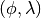
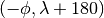
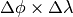
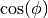
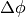
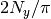
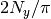

(25) Global distribution of antipodes¶
As promised in Section [sec:example23], we will study
antipodes. The antipode of a point at  is the
point at . We seek an answer to the
question that has plagued so many for so long: Given the distribution of
land and ocean, how often is the antipode of a point on land also on
land? And what about marine antipodes? We use grdlandmask and
grdmath to map these distributions and
calculate the area of the Earth (in percent) that goes with each of the
three possibilities. To make sense of our
grdmath equations below, note that we
first calculate a grid that is +1 when a point and its antipode is on
land, -1 if both are in the ocean, and 0 elsewhere. We then seek to
calculate the area distribution of dry antipodes by only pulling out the
nodes that equal +1. As each point represent an area approximated by
 where the
term’s actual dimension depends on
, we need to allow for that shrinkage, normalize our
sum to that of the whole area of the Earth, and finally convert that
ratio to percent. Since the , 
terms appear twice in these expressions they cancel out, leaving the
somewhat intractable expressions below where the sum of
for all  is known to equal :
is known to equal :
In the end we obtain a funny-looking map depicting the antipodal distribution as well as displaying in legend form the requested percentages. Note that the script is set to evaluate a global 30 minute grid for expediency (D = 30), hence several smaller land masses that do have terrestrial antipodes do not show up. If you want a more accurate map you can set the parameter D to a smaller increment (try 5 and wait a few minutes).
The call to grdimage includes the -Sn to suspend interpolation and only return the value of the nearest neighbor. This option is particularly practical for plotting categorical data, like these, that should not be interpolated.
#!/bin/bash
# GMT EXAMPLE 25
#
# Purpose: Display distribution of antipode types
# GMT progs: gmtset, grdlandmask, grdmath, grd2xyz, gmtmath, grdimage, pscoast, pslegend
# Unix progs: cat
#
# Create D minutes global grid with -1 over oceans and +1 over land
ps=example_25.ps
D=30
gmt grdlandmask -Rg -Im -Dc -A500 -N-1/1/1/1/1 -r -Gwetdry.nc
# Manipulate so -1 means ocean/ocean antipode, +1 = land/land, and 0 elsewhere
gmt grdmath -fg wetdry.nc DUP 180 ROTX FLIPUD ADD 2 DIV = key.nc
# Calculate percentage area of each type of antipode match.
gmt grdmath -Rg -Im -r Y COSD 60 $D DIV 360 MUL DUP MUL PI DIV DIV 100 MUL = scale.nc
gmt grdmath -fg key.nc -1 EQ 0 NAN scale.nc MUL = tmp.nc
gmt grd2xyz tmp.nc -s -ZTLf > key.b
ocean=`gmt gmtmath -bi1f -Ca -S key.b SUM UPPER RINT =`
gmt grdmath -fg key.nc 1 EQ 0 NAN scale.nc MUL = tmp.nc
gmt grd2xyz tmp.nc -s -ZTLf > key.b
land=`gmt gmtmath -bi1f -Ca -S key.b SUM UPPER RINT =`
gmt grdmath -fg key.nc 0 EQ 0 NAN scale.nc MUL = tmp.nc
gmt grd2xyz tmp.nc -s -ZTLf > key.b
mixed=`gmt gmtmath -bi1f -Ca -S key.b SUM UPPER RINT =`
# Generate corresponding color table
cat << END > key.cpt
-1.5 blue -0.5 blue
-0.5 gray 0.5 gray
0.5 red 1.5 red
END
# Create the final plot and overlay coastlines
gmt gmtset FONT_ANNOT_PRIMARY +10p FORMAT_GEO_MAP dddF
gmt grdimage key.nc -JKs180/9i -Bx60 -By30 -BWsNE+t"Antipodal comparisons" -K -Ckey.cpt -Y1.2i -nn > $ps
gmt pscoast -R -J -O -K -Wthinnest -Dc -A500 >> $ps
# Place an explanatory legend below
gmt pslegend -R0/9/0/0.5 -Jx1i -O -Dx4.5i/0/6i/TC -Y-0.2i -F+pthick >> $ps << END
N 3
S 0.15i s 0.2i red 0.25p 0.3i Terrestrial Antipodes [$land %]
S 0.15i s 0.2i blue 0.25p 0.3i Oceanic Antipodes [$ocean %]
S 0.15i s 0.2i gray 0.25p 0.3i Mixed Antipodes [$mixed %]
END
rm -f *.nc key.* gmt.conf
Global distribution of antipodes.